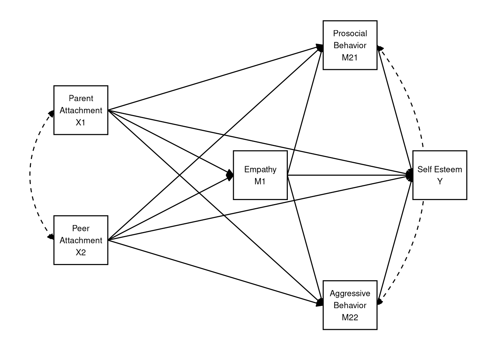
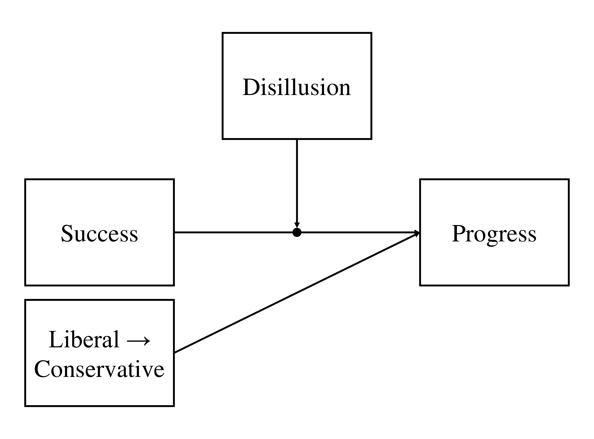
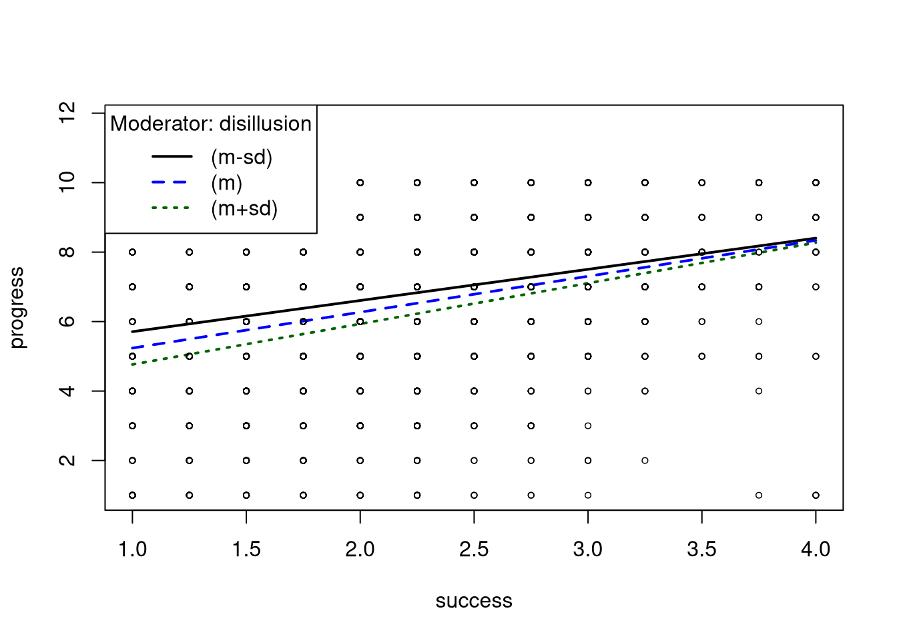

3.4 In-Class Exercises
3.4.1 Mediation
In this practical, we’ll go back to the data from the at-home exercises, SelfEsteem.sav. Recall that these data comprise 143 observations of the following variables.
- case: Participant ID number
- ParAtt: Parental Attachment
- PeerAtt: Peer Attachment
- Emp: Empathy
- ProSoc: Prosocial behavior
- Aggr: Aggression
- SelfEst: Self-esteem
When we last worked with the data, we built a model with one mediator (Emp), creating indirect effects between our predictors ParAtt and PeerAtt, and our outcome variable SelfEst. Below, you will estimate a more complex, multiple-mediator model.
3.4.1.1
Load the data into the object seData using haven::read_sav()
Click to show code
library(haven)
seData <- read_sav("SelfEsteem.sav")For this analysis, we are interested in the (indirect) effects of parental and peer attachment on self-esteem. Furthermore, we want to evaluate the mediating roles of empathy and social behavior (i.e., prosocial behavior and aggression).
Specifically, we have the following hypotheses.
- Better peer relationships will promote higher self-esteem via a three-step
indirect process.
- Better peer relationships will increase empathy levels.
- Higher empathy will increase prosocial behavior and decrease aggressive behavior.
- More prosocial behaviors and less aggressive behavior will both produce higher self-esteem.
- Better relationships with parents directly increase self-esteem.
To evaluate these hypotheses, we will use lavaan to estimate the following multiple mediator model as a path model.

3.4.1.2
Specify the lavaan model syntax implied by the path diagram shown above.
- Save the resulting character string as an object in your environment.
Click to show code
mod0 <- '
## Equation for outcome:
SelfEst ~ ProSoc + Aggr + Emp + ParAtt + PeerAtt
## Equations for stage 2 mediators:
ProSoc ~ PeerAtt + ParAtt + Emp
Aggr ~ PeerAtt + ParAtt + Emp
## Equation for stage 1 mediator:
Emp ~ ParAtt + PeerAtt
## Covariances:
ProSoc ~~ Aggr
ParAtt ~~ PeerAtt
'3.4.1.3
Use the lavaan::sem() function to estimate the model defined in 3.4.1.2.
- Use the default settings in
sem(). - Summarize the fitted model.
Click to show code
library(lavaan)
out <- sem(mod0, data = seData)
summary(out)## lavaan 0.6.16 ended normally after 16 iterations
##
## Estimator ML
## Optimization method NLMINB
## Number of model parameters 21
##
## Number of observations 143
##
## Model Test User Model:
##
## Test statistic 0.000
## Degrees of freedom 0
##
## Parameter Estimates:
##
## Standard errors Standard
## Information Expected
## Information saturated (h1) model Structured
##
## Regressions:
## Estimate Std.Err z-value P(>|z|)
## SelfEst ~
## ProSoc 0.252 0.096 2.634 0.008
## Aggr 0.185 0.085 2.172 0.030
## Emp 0.143 0.098 1.460 0.144
## ParAtt 0.244 0.078 3.133 0.002
## PeerAtt 0.051 0.091 0.555 0.579
## ProSoc ~
## PeerAtt -0.037 0.080 -0.469 0.639
## ParAtt 0.193 0.067 2.886 0.004
## Emp 0.477 0.074 6.411 0.000
## Aggr ~
## PeerAtt -0.095 0.090 -1.055 0.291
## ParAtt -0.034 0.075 -0.454 0.650
## Emp -0.309 0.084 -3.697 0.000
## Emp ~
## ParAtt 0.078 0.075 1.045 0.296
## PeerAtt 0.306 0.086 3.557 0.000
##
## Covariances:
## Estimate Std.Err z-value P(>|z|)
## .ProSoc ~~
## .Aggr -0.086 0.058 -1.476 0.140
## ParAtt ~~
## PeerAtt 0.537 0.103 5.215 0.000
##
## Variances:
## Estimate Std.Err z-value P(>|z|)
## .SelfEst 0.796 0.094 8.456 0.000
## .ProSoc 0.618 0.073 8.456 0.000
## .Aggr 0.777 0.092 8.456 0.000
## .Emp 0.779 0.092 8.456 0.000
## ParAtt 1.277 0.151 8.456 0.000
## PeerAtt 0.963 0.114 8.456 0.0003.4.1.4
Considering the parameter estimates from 3.4.1.3, what can you say about the hypotheses?
Click for explanation
Notice that all of the hypotheses stated above are explicitly directional. Hence, when evaluating the significance of the structural paths that speak to these hypotheses, we should use one-tailed tests. We cannot ask lavaan to return one-tailed p-values, but we have no need to do so. We can simply divide the two-tailed p-values in half.
The significant direct effect of ParAtt on SelfEst
(\(\beta = 0.244\),
\(Z = 3.13\),
\(p = 0.001\)) and the lack of a significant direct
effect of PeerAtt on SelfEst (\(\beta = 0.051\),
\(Z = 0.555\),
\(p = 0.29\)) align with our hypotheses.
The remaining patterns of individual estimates also seem to conform to the
hypotheses (e.g., all of the individual paths comprising the indirect effects of
PeerAtt on SelfEst are significant). We cannot make any firm conclusions
until we actually estimate and test the indirect effects, though.
3.4.1.5
Modify the model syntax from 3.4.1.2 by adding definitions of the two
hypothesized IEs from PeerAtt to SelfEst.
Click to show code
You can use any labeling scheme that makes sense to you, but I recommend adopting some kind of systematic rule. Here, I will label the individual estimates in terms of the short variable names used in the path diagram above.
mod <- '
## Equation for outcome:
SelfEst ~ y_m21 * ProSoc + y_m22 * Aggr + Emp + ParAtt + PeerAtt
## Equations for stage 2 mediators:
ProSoc ~ m21_x2 * PeerAtt + ParAtt + m21_m1 * Emp
Aggr ~ m22_x2 * PeerAtt + ParAtt + m22_m1 * Emp
## Equation for stage 1 mediator:
Emp ~ ParAtt + m1_x2 * PeerAtt
## Covariances:
ProSoc ~~ Aggr
ParAtt ~~ PeerAtt
## Indirect effects:
ie_pro := m1_x2 * m21_m1 * y_m21
ie_agg := m1_x2 * m22_m1 * y_m22
'3.4.1.6
Use lavaan::sem() to estimate the model with the IEs defined.
- Use the default settings for
sem(). - Are the hypothesized IEs significant according to the default tests?
Click to show code
out <- sem(mod, data = seData)
summary(out)## lavaan 0.6.16 ended normally after 16 iterations
##
## Estimator ML
## Optimization method NLMINB
## Number of model parameters 21
##
## Number of observations 143
##
## Model Test User Model:
##
## Test statistic 0.000
## Degrees of freedom 0
##
## Parameter Estimates:
##
## Standard errors Standard
## Information Expected
## Information saturated (h1) model Structured
##
## Regressions:
## Estimate Std.Err z-value P(>|z|)
## SelfEst ~
## ProSoc (y_21) 0.252 0.096 2.634 0.008
## Aggr (y_22) 0.185 0.085 2.172 0.030
## Emp 0.143 0.098 1.460 0.144
## ParAtt 0.244 0.078 3.133 0.002
## PerAtt 0.051 0.091 0.555 0.579
## ProSoc ~
## PerAtt (m21_2) -0.037 0.080 -0.469 0.639
## ParAtt 0.193 0.067 2.886 0.004
## Emp (m21_1) 0.477 0.074 6.411 0.000
## Aggr ~
## PerAtt (m22_2) -0.095 0.090 -1.055 0.291
## ParAtt -0.034 0.075 -0.454 0.650
## Emp (m22_1) -0.309 0.084 -3.697 0.000
## Emp ~
## ParAtt 0.078 0.075 1.045 0.296
## PerAtt (m1_2) 0.306 0.086 3.557 0.000
##
## Covariances:
## Estimate Std.Err z-value P(>|z|)
## .ProSoc ~~
## .Aggr -0.086 0.058 -1.476 0.140
## ParAtt ~~
## PeerAtt 0.537 0.103 5.215 0.000
##
## Variances:
## Estimate Std.Err z-value P(>|z|)
## .SelfEst 0.796 0.094 8.456 0.000
## .ProSoc 0.618 0.073 8.456 0.000
## .Aggr 0.777 0.092 8.456 0.000
## .Emp 0.779 0.092 8.456 0.000
## ParAtt 1.277 0.151 8.456 0.000
## PeerAtt 0.963 0.114 8.456 0.000
##
## Defined Parameters:
## Estimate Std.Err z-value P(>|z|)
## ie_pro 0.037 0.018 2.010 0.044
## ie_agg -0.017 0.011 -1.657 0.098Click for explanation
The IE of Peer Attachment on Self Esteem through Empathy and Prosocial Behavior is significant (\(\hat{\textit{IE}} = 0.037\), \(Z = 2.01\), \(p = 0.022\)), as is the analogous IE through Aggressive Behavior (\(\hat{\textit{IE}} = -0.017\), \(Z = -1.66\), \(p = 0.049\)). Though, this latter effect is just barely significant at the \(\alpha = 0.05\) level.
The tests we used to evaluate the significance of the IEs in 3.4.1.6 are flawed because they assume normal sampling distributions for the IEs. However the IEs are defined as products of multiple, normally distributed, regression slopes. So the IEs themselves cannot be normally distributed (at least in finite samples), and the results of the normal-theory significance tests may be misleading.
To get an accurate test of the IEs, we should use bootstrapping to generate an
empirical sampling distribution for each IE. In lavaan, we implement
bootstrapping by specifying the se = "bootstrap" option in the fitting
function (i.e., the cfa() or sem() function) and specifying the number of
bootstrap samples via the bootstrap option.
Workflow Tip
To draw reliable conclusions from bootstrapped results, we need many bootstrap samples (i.e., B > 1000), but we must estimate the full model for each of these samples, so the estimation can take a long time. To avoid too much frustration, you should first estimate the model without bootstrapping to make sure everything is specified correctly. Only after you are certain that your code is correct do you want to run the full bootstrapped version.
3.4.1.7
Re-estimate the model from 3.4.1.6 using 1000 bootstrap samples.
- Other than the
seandbootstrapoptions, use the defaults. - Are the hypothesized IEs significant according to the bootstrap-based test statistics?
Click to show code
## Set a seed to get replicable bootstrap samples:
set.seed(235711)
## Estimate the model with bootstrapping:
out_boot <- sem(mod, data = seData, se = "bootstrap", bootstrap = 1000)
## Summarize the model:
summary(out_boot)## lavaan 0.6.16 ended normally after 16 iterations
##
## Estimator ML
## Optimization method NLMINB
## Number of model parameters 21
##
## Number of observations 143
##
## Model Test User Model:
##
## Test statistic 0.000
## Degrees of freedom 0
##
## Parameter Estimates:
##
## Standard errors Bootstrap
## Number of requested bootstrap draws 1000
## Number of successful bootstrap draws 1000
##
## Regressions:
## Estimate Std.Err z-value P(>|z|)
## SelfEst ~
## ProSoc (y_21) 0.252 0.100 2.529 0.011
## Aggr (y_22) 0.185 0.085 2.174 0.030
## Emp 0.143 0.095 1.507 0.132
## ParAtt 0.244 0.079 3.089 0.002
## PerAtt 0.051 0.095 0.530 0.596
## ProSoc ~
## PerAtt (m21_2) -0.037 0.082 -0.456 0.648
## ParAtt 0.193 0.068 2.831 0.005
## Emp (m21_1) 0.477 0.078 6.092 0.000
## Aggr ~
## PerAtt (m22_2) -0.095 0.087 -1.093 0.275
## ParAtt -0.034 0.076 -0.448 0.654
## Emp (m22_1) -0.309 0.092 -3.356 0.001
## Emp ~
## ParAtt 0.078 0.072 1.092 0.275
## PerAtt (m1_2) 0.306 0.079 3.896 0.000
##
## Covariances:
## Estimate Std.Err z-value P(>|z|)
## .ProSoc ~~
## .Aggr -0.086 0.058 -1.493 0.135
## ParAtt ~~
## PeerAtt 0.537 0.128 4.195 0.000
##
## Variances:
## Estimate Std.Err z-value P(>|z|)
## .SelfEst 0.796 0.082 9.698 0.000
## .ProSoc 0.618 0.068 9.114 0.000
## .Aggr 0.777 0.104 7.476 0.000
## .Emp 0.779 0.090 8.651 0.000
## ParAtt 1.277 0.197 6.473 0.000
## PeerAtt 0.963 0.105 9.203 0.000
##
## Defined Parameters:
## Estimate Std.Err z-value P(>|z|)
## ie_pro 0.037 0.019 1.891 0.059
## ie_agg -0.017 0.011 -1.638 0.101Click for explanation
As with the normal-theory tests, the hypothesized IE of Peer Attachment on Self Esteem was significant (\(\hat{\textit{IE}} = 0.037\), \(Z = 1.89\), \(p = 0.029\)), but the IE of Aggressive Behavior has crossed into nonsignificant territory (\(\hat{\textit{IE}} = -0.017\), \(Z = -1.64\), \(p = 0.051\)).
Note: Bootstrapping is a stochastic method, so each run can provide different results. Since the indirect effect of aggressive behavior is so close to the critical value, you may come to a different conclusions vis-á-vis statistical significance if you run this analysis with a different random number seed or a different number of bootstrap samples.
When you use the summary() function to summarize the bootstrapped model from
3.4.1.7, the output will probably look pretty much the same as it did in
3.4.1.6, but it’s not. The standard errors and test statistics in the
bootstrapped summary are derived from empirical sampling distributions, whereas
these values are based on an assumed normal sampling distribution in
3.4.1.6.
The standard method of testing IEs with bootstrapping is to compute confidence
intervals (CIs) from the empirical sampling distribution of the IEs. In
lavaan, we can compute basic (percentile, 95%) CIs by adding the ci = TRUE
option to the summary() function. To evaluate our directional hypotheses at an
\(\alpha = 0.05\) level, however, we need to compute 90% CIs. We can get more
control over the summary statistics (include the CIs) with the
parameterEstimates() function.
3.4.1.8
Check the documentation for lavaan::parameterEstimates().
Click to show code
?parameterEstimates3.4.1.9
Use the parameterEstimates() function to compute bootstrapped CIs for the
hypothesized IEs.
- Compute percentile CIs.
- Are the IEs significant according to the bootstrapped CIs?
Click to show code
parameterEstimates(out_boot, ci = TRUE, level = 0.9)Click for explanation
When evaluating a directional hypothesis with a CI, we only consider one of the interval’s boundaries.
- For a hypothesized positive effect, we check only if the lower boundary is greater than zero.
- For a hypothesized negative effect, we check if the upper boundary is less than zero.
As with the previous tests, the IE of Peer Attachment on Self Esteem through Empathy and Prosocial Behavior is significant (\(\hat{\textit{IE}} = 0.037\), \(95\% ~ CI = [0.009; \infty]\)), but the analogous IE through Aggressive Behavior is not quite significant (\(\hat{\textit{IE}} = -0.017\), \(95\% ~ CI = [-\infty; -0.003]\)).
3.4.1.10
Based on the analyses you’ve conducted here, what do you conclude vis-à-vis the original hypotheses?
Click for explanation
When using normal-theory tests, both hypothesized indirect effects between Peer Attachment and Self Esteem were supported in that the IE through Empathy and Prosocial Behavior as well as the IE through Empathy and Aggressive Behavior were both significant. The hypothesized direct effect of Parent Attachment on Self Esteem was also born out via a significant direct effect in the model.
When testing the indirect effects with bootstrapping, however, the effect through Aggressive Behavior was nonsignificant. Since bootstrapping gives a more accurate test of the indirect effect, we should probably trust these results more than the normal-theory results. We should not infer a significant indirect effect of Peer Attachment on Self Esteem transmitted through Empathy and Aggressive Behavior.
These results may not tell the whole story, though. We have not tested for
indirect effects between Parent Attachment and Self Esteem, and we have not
evaluated simpler indirect effects between Peer Attachment and Self Esteem
(e.g., PeerAtt \(\rightarrow\) Emp \(\rightarrow\) SelfEst).
3.4.2 Moderation
We will first analyze a synthetic version of the Outlook on Life Survey data. The original data were collected in the United States in 2012 to measure, among other things, attitudes about racial issues, opinions of the Federal government, and beliefs about the future.
We will work with a synthesized subset of the original data. You can access these synthetic data as outlook.rds. This dataset comprises 2288 observations of the following 13 variables.
d1:d3: Three observed indicators of a construct measuring disillusionment with the US Federal government.- Higher scores indicate more disillusionment
s1:s4: Four observed indicators of a construct measuring the perceived achievability of material success.- Higher scores indicate greater perceived achievability
progress: A single item assessing perceived progress toward achieving the “American Dream”- Higher scores indicate greater perceived progress
merit: A single item assessing endorsement of the meritocratic ideal that hard work leads to success.- Higher scores indicate stronger endorsement of the meritocratic ideal
lib2Con: A single item assessing liberal-to-conservative orientation- Lower scores are more liberal, higher scores are more conservative
party: A four-level factor indicating self-reported political party affiliationdisillusion: A scale score representing disillusionment with the US Federal government- Created as the mean of
d1:d3
- Created as the mean of
success: A scale score representing the perceived achievability of material success- Created as the mean of
s1:s4
- Created as the mean of
To satisfy the access and licensing conditions under which the original data are distributed, the data contained in outlook.rds were synthesized from the original variables using the methods described by Volker and Vink (2021). You can access the original data here, and you can access the code used to process the data here.
3.4.2.1
Read in the outlook.rds dataset.
Hint: An RDS file is an R object that’s been saved to a file. To read in this
type of file, we use readRDS() from base R.
Click to show code
outlook <- readRDS("outlook.rds")3.4.2.2
Summarize the outlook data to get a sense of their characteristics.
Click to show code
head(outlook)summary(outlook)## d1 d2 d3 s1
## Min. :1.000 Min. :1.000 Min. :1.000 Min. :1.000
## 1st Qu.:3.000 1st Qu.:2.000 1st Qu.:3.000 1st Qu.:2.000
## Median :4.000 Median :3.000 Median :4.000 Median :2.000
## Mean :3.642 Mean :3.218 Mean :3.629 Mean :2.288
## 3rd Qu.:4.000 3rd Qu.:4.000 3rd Qu.:4.000 3rd Qu.:3.000
## Max. :5.000 Max. :5.000 Max. :5.000 Max. :4.000
## s2 s3 s4 progress
## Min. :1.000 Min. :1.000 Min. :1.000 Min. : 1.000
## 1st Qu.:1.000 1st Qu.:1.000 1st Qu.:2.000 1st Qu.: 5.000
## Median :2.000 Median :2.000 Median :2.000 Median : 7.000
## Mean :1.922 Mean :2.012 Mean :2.469 Mean : 6.432
## 3rd Qu.:2.000 3rd Qu.:3.000 3rd Qu.:3.000 3rd Qu.: 8.000
## Max. :4.000 Max. :4.000 Max. :4.000 Max. :10.000
## merit lib2Con party disillusion
## Min. :1.000 Min. :1.000 republican : 332 Min. :1.000
## 1st Qu.:4.000 1st Qu.:3.000 democrat :1264 1st Qu.:3.000
## Median :5.000 Median :4.000 independent: 576 Median :3.667
## Mean :4.826 Mean :3.998 other : 116 Mean :3.497
## 3rd Qu.:6.000 3rd Qu.:5.000 3rd Qu.:4.000
## Max. :7.000 Max. :7.000 Max. :5.000
## success
## Min. :1.000
## 1st Qu.:1.750
## Median :2.000
## Mean :2.173
## 3rd Qu.:2.500
## Max. :4.000str(outlook)## 'data.frame': 2288 obs. of 13 variables:
## $ d1 : num 4 4 4 5 5 4 5 4 4 4 ...
## $ d2 : num 4 2 4 4 3 5 4 2 4 5 ...
## $ d3 : num 4 4 4 5 4 4 4 3 3 4 ...
## $ s1 : num 3 3 4 2 2 2 2 1 3 3 ...
## $ s2 : num 2 2 2 1 1 2 1 1 2 2 ...
## $ s3 : num 3 2 4 1 2 1 1 1 3 2 ...
## $ s4 : num 3 3 3 1 2 3 3 2 2 2 ...
## $ progress : num 8 4 6 1 6 5 7 6 9 7 ...
## $ merit : num 6 5 5 4 3 4 2 5 5 5 ...
## $ lib2Con : num 5 6 4 1 4 4 4 4 4 5 ...
## $ party : Factor w/ 4 levels "republican","democrat",..: 1 3 3 2 2 2 2 2 4 1 ...
## $ disillusion: num 4 3.33 4 4.67 4 ...
## $ success : num 2.75 2.5 3.25 1.25 1.75 2 1.75 1.25 2.5 2.25 ...We will first use OLS regression to estimate a model encoding the following relations:
- Belief in the achievability of success, success, predicts perceived progress toward the American Dream, progress, as the focal effect.
- Disillusionment with the US Federal government, disillusion moderates the success \(\rightarrow\) progress effect.
- Placement on the liberal-to-conservative continuum, lib2Con is partialed out as a covariate.
3.4.2.3
Draw the conceptual path diagram for the model described above.
Click for explanation

3.4.2.4
Write out the regression equation necessary to evaluate the moderation hypothesis described above.
Click for explanation
\[ Y_{progress} = \beta_0 + \beta_1 W_{lib2Con} + \beta_2 X_{success} + \beta_3 Z_{disillusion} + \beta_4 XZ + \varepsilon \]
3.4.2.5
Use lm() to estimate the moderated regression model via OLS regression.
Click to show code
olsFit <- lm(progress ~ lib2Con + success * disillusion, data = outlook)3.4.2.6
Summarize the fitted model and interpret the results.
- Is the moderation hypothesis supported?
- How does disillusionment level affect the focal effect?
Click to show code
summary(olsFit)##
## Call:
## lm(formula = progress ~ lib2Con + success * disillusion, data = outlook)
##
## Residuals:
## Min 1Q Median 3Q Max
## -7.4315 -1.2525 0.1307 1.4369 5.6717
##
## Coefficients:
## Estimate Std. Error t value Pr(>|t|)
## (Intercept) 6.81128 0.62073 10.973 < 2e-16 ***
## lib2Con 0.03052 0.03040 1.004 0.3155
## success 0.42360 0.25853 1.638 0.1015
## disillusion -0.78002 0.16864 -4.625 3.95e-06 ***
## success:disillusion 0.17429 0.07273 2.396 0.0166 *
## ---
## Signif. codes: 0 '***' 0.001 '**' 0.01 '*' 0.05 '.' 0.1 ' ' 1
##
## Residual standard error: 2.041 on 2283 degrees of freedom
## Multiple R-squared: 0.1385, Adjusted R-squared: 0.137
## F-statistic: 91.74 on 4 and 2283 DF, p-value: < 2.2e-16Click for explanation
Yes, disillusion significantly moderates the relation between success and progress (\(\beta = 0.174\), \(t[2283] = 2.396\), \(p = 0.017\)) such that the effect of success on progress increases as levels of disillusion increase, after controlling for lib2Con.
The rockchalk package contains some useful routines for probing
interactions estimated via lm(). Specifically, the plotslopes() function will
estimate and plot simple slopes, and the testSlopes() function tests the simple
slopes estimated by plotSlopes().
3.4.2.7
Probe the interaction.
- Use the
plotSlopes()andtestSlopes()functions from the rockchalk package to conduct a simple slopes analysis for the model from 3.4.2.5.
Click to show code
library(rockchalk)
## Estimate and plot simple slopes:
psOut <- plotSlopes(olsFit,
plotx = "success",
modx = "disillusion",
modxVals = "std.dev")
## Test the simple slopes:
tsOut <- testSlopes(psOut)## Values of disillusion OUTSIDE this interval:
## lo hi
## -28.9332857 0.2672244
## cause the slope of (b1 + b2*disillusion)success to be statistically significant## View the results:
tsOut$hypotestsNote: The message printed by testSlopes() gives the boundaries of the
Johnson-Neyman Region of Significance (Johnson & Neyman, 1936).
Johnson-Neyman analysis is an alternative method of probing interactions that we
have not covered in this course. For more information, check out
Preacher, et al. (2006).
We will now use lavaan to estimate the moderated regression model from above as a path analysis.
3.4.2.8
Define the model syntax for the path analytic version of the model described above.
- Parameterize the model as in the OLS regression.
- Use only observed items and scale scores.
Click to show code
pathMod <- '
progress ~ 1 + lib2Con + success + disillusion + success:disillusion
'3.4.2.9
Estimate the path model on the outlook data.
Click to show code
pathFit <- sem(pathMod, data = outlook)3.4.2.10
Summarize the fitted path model and interpret the results.
- Do the results match the OLS regression results?
- What proportion of the variability in progress is explained by this model?
Hint: the function lavInspect() can be used to extract information from
models
Click to show code
summary(pathFit)## lavaan 0.6.16 ended normally after 1 iteration
##
## Estimator ML
## Optimization method NLMINB
## Number of model parameters 6
##
## Number of observations 2288
##
## Model Test User Model:
##
## Test statistic 0.000
## Degrees of freedom 0
##
## Parameter Estimates:
##
## Standard errors Standard
## Information Expected
## Information saturated (h1) model Structured
##
## Regressions:
## Estimate Std.Err z-value P(>|z|)
## progress ~
## lib2Con 0.031 0.030 1.005 0.315
## success 0.424 0.258 1.640 0.101
## disillusion -0.780 0.168 -4.630 0.000
## success:dsllsn 0.174 0.073 2.399 0.016
##
## Intercepts:
## Estimate Std.Err z-value P(>|z|)
## .progress 6.811 0.620 10.985 0.000
##
## Variances:
## Estimate Std.Err z-value P(>|z|)
## .progress 4.157 0.123 33.823 0.000lavInspect(pathFit, "r2")## progress
## 0.138Click for explanation
Yes, the estimates and inferential conclusions are all the same as in the OLS regression model. The model explains 13.85% of the variability in progress.
The semTools package contains some helpful routines for probing
interactions estimated via the lavaan() function (or one of it’s wrappers).
Specifically, the probe2WayMC() and plotProbe() functions will estimate/test
simple slopes and plot the estimated simple slopes, respectively.
3.4.2.11
Probe the interaction from 3.4.2.9 using semTools utilities.
- Use
probe2WayMC()to estimate and test the simple slopes. - Use
plotProbe()to visualize the simple slopes. - Define the simple slopes with the same conditional values of disillusion that you used in 3.4.2.7.
- Which simple slopes are significant?
- Do these results match the results from 3.4.2.7?
Click to show code
library(semTools)
## Define the conditional values at which to calculate simple slopes:
condVals <- summarise(outlook,
"m-sd" = mean(disillusion) - sd(disillusion),
mean = mean(disillusion),
"m+sd" = mean(disillusion) + sd(disillusion)
) %>% unlist()
## Compute simple slopes and intercepts:
ssOut <- probe2WayMC(pathFit,
nameX = c("success", "disillusion", "success:disillusion"),
nameY = "progress",
modVar = "disillusion",
valProbe = condVals)
## Check the results:
ssOut## $SimpleIntcept
## disillusion est se z pvalue
## m-sd 2.719 4.690 0.231 20.271 0
## mean 3.497 4.084 0.190 21.508 0
## m+sd 4.274 3.477 0.230 15.122 0
##
## $SimpleSlope
## disillusion est se z pvalue
## m-sd 2.719 0.897 0.083 10.792 0
## mean 3.497 1.033 0.065 15.994 0
## m+sd 4.274 1.169 0.088 13.223 0## Visualize the simple slopes:
plotProbe(ssOut,
xlim = range(outlook$success),
xlab = "Ease of Personal Success",
ylab = "Progress toward American Dream",
legendArgs = list(legend = names(condVals))
)
Click for explanation
Each of the simple slopes is significant. As level of disillusionment increases, the effect of success on progress also increases, and this effect is significant for all levels of disillusion considered here. These results match the simple slopes from the OLS regression analysis.
End of In-Class Exercises 3